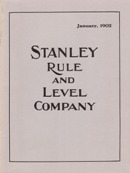
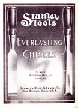
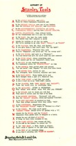

The Old Tool Reprint Room
Reprints: Stanley - Z
Some of the reprints listed here were re-created from damaged originals. Their covers and title pages may bear no relationship to the actual artifact. Others, especially those reprinted by Ken Roberts, have had additional pages of background information added to them. Conversely, some titles were not reproduced in their entirety in order to keep production costs down. The size of many reprints has no correlation to that of the original document.
Stanley
- 1855
- A. Stanley & Company
- List of Boxwood and Ivory Rules: Manufactured by A. Stanley & Co., New Britain, Conn.
- New Britain, Connecticut : A. Stanley & Company, 1855.
- Paperbound, 10 pages
- Reprinted in: 1859 Price List of Boxwood and Ivory Rules, Levels, Try Squares, Sliding T Bevels, &c.
- Also reprinted in: The Stanley Catalog Collection, 1855-1898
- 1857
- A. Stanley & Company
- Price List of Boxwood and Ivory Rules: Manufactured by A. Stanley & Co., New Britain, Conn.
- New Britain, Connecticut : A. Stanley & Company, [ca. 1857].
- Reprinted: [Marietta, Ohio] : John Walter, 1989.
- Reprint broadside is 21.5 x 28 cm.
- 1859
- Stanley Rule and Level Company
- Cover title: 1859 Price List of Boxwood and Ivory Rules, Levels, Try Squares, Sliding T Bevels, &c.: Manufactured by the Stanley Rule and Level Company
- Title page: Price List of Boxwood and Ivory Rules, Levels, Try Square, Sliding T Bevels, &c.: Manufactured by the Stanley Rule and Level Company
- New Britain, Connecticut : Stanley Rule and Level Company, 1859.
- Reprinted: Fitzwilliam, New Hampshire : Ken Roberts Publishing company, 1975.
- Roberts' reprint is paperbound, 32 pages, 14 x 21.5 cm.
- Roberts' reprint includes facsimile of the 1855 A. Stanley price list, and 2 pages of additional content not found in either of the original price lists.
- Catalog also reprinted in: The Stanley Catalog Collection, 1855-1898

- 1865
- Stanley Rule and Level Company
- Stanley Rule and Level Co.: Manufacturers of Box Wood and Ivory Rules, Spirit Levels, Try Squares, Bevels, Gauges &c
- New Britain, Connecticut : A. Stanley & Company, [ca. 1865].
- Reprinted: [Marietta, Ohio] : John Walter, 1995.
- Reprint broadside is 21.5 x 28 cm.
- 1867
- Stanley Rule and Level Company
- Cover title: Price List of Stanley Rule and Level., : January 1867
- Title page: Price List of U. S. Standard Boxwood and Ivory Rules, Levels, Try Squares, Gauges, Handles, Mallets, Hand Screws, &c.: Manufactured by the Stanley Rule and Level Co., New Britain, Conn., and Brattleboro', Vermont
- New Britain : Stanley Rule and Level Company, 1867.
- Reprinted: Ken Roberts Publishing Company, 1991. (ISBN 0-913602-03-5)
- Reprint is paperbound, 52 pages, 14 x 21.5 cm.
- Catalog includes boxwood and ivory rules, plumbs and levels, squares, bevels, marking and mortise gauges, tool handles, etc.
- Catalog also reprinted in: The Stanley Catalog Collection, 1855-1898
- 1870
- Stanley Rule and Level Company
- Cover title: The Stanley Rule and Level Company's Catalogue of Tools and Hardware, 1870
- Title page: Price List of U. S. Standard Boxwood and Ivory Rules, Levels, Try Squares, Gauges, Iron and Wood Bench Planes, Mallets, Hand Screws, Spoke Shaves, &c.: Manufactured by the Stanley Rule and Level Co., New Britain, Conn., and Brattleboro', Vermont
- New Britain, Connecticut : Stanley Rule and Level Company, 1870.
- Reprinted: Fitzwilliam, New Hampshire: Ken Roberts Publishing Company, 1973, (2nd printing, 1978), (ISBN 0-913602-04-3)
- Roberts' reprint is paperbound, 84 pages and 10 pages, 14 x 21.5 cm.
- Roberts reprint includes the 12-page 1871 catalog supplement and a time line of company history prior to 1872.
- Catalog includes an extensive line of carpentry and woodworking tools
- Catalog and 1871 supplement also reprinted in: The Stanley Catalog Collection, 1855-1898
- 1872
- Stanley Rule and Level Company
- Price List of U. S. Standard Boxwood and Ivory Rules, Levels, Try Squares, Gauges, Iron and Wood Bench Planes, Mallets, Hand Screws, Spoke Shaves, Screw Drivers. &c.: Manufactured by the Stanley Rule and Level Co., New Britain, Conn., and Brattleboro', Vermont.
- New Britain, Connecticut : Stanley Rule and Level Company, 1872.
- Reprinted: Fitzwilliam, New Hampshire : Ken Roberts Publishing Company, 1981 (ISBN 0-913602-44-2)
- Roberts' reprint is paperbound, 45 pages, 21.5 x 28 cm.
- Roberts' reprint includes 3 pages of additional content not found in the original publication.
- Catalog features an extensive line of carpentry and woodworking tools
- Catalog also reprinted in: The Stanley Catalog Collection. Volume II
{kind=link}
- Stanley Rule and Level Company
- Bailey's Patent Adjustable Iron and Wood Bench Planes Manufactured by the Stanley Rule and Level Company, New Britain, Conn.
- New Britain, Connecticut : Stanley Rule and Level Company, 1872.
- Reprinted: Philip Whitby, 1986.
- Single sheet folded to 8.5 x 15.5 cm.
- A price list of metallic and transitional planes.
- 1874
- Stanley Rule and Level Company
- Cover title: 1874 Catalogue with 1876 Supplement: Tools and Hardware Manufactured by the Stanley Rule & level Co., New Britain, Conn.
- Title page: Price List of U. S. Standard Boxwood and Ivory Rules, Levels, Try Squares, Gauges, Mallets, Handles, Screw Drivers, Hand Screws, Iron and Wood Planes, Spoke Shaves, etc.: Manufactured by the Stanley Rule and Level Co., New Britain, Conn., U.S.A.
- New Britain, Connecticut : Stanley Rule and Level Company, 1874.
- Reprinted: Fitzwilliam, New Hampshire : Ken Roberts Publishing Company, 1978. (ISBN 0-913602-29-9)
- Roberts' reprint is paperbound, 74 pages, 14 x 21.5 cm.
- Roberts' reprint contains note by Ken Roberts inside front and back covers.
- Roberts' reprint includes 1876 catalog supplement.
- Catalog features an extensive line of carpentry and woodworking tools
- Catalog also reprinted in: The Stanley Catalog Collection. Volume II
- 1876
- A. & T. W. Stanley
- Stanley's Meter-Diagram: Illustrating the Metric System with Explanations, Tables of Length, Surface, Capacity, and Weight, Rules, Approximate Equivalents, etc.: A. & T. W. Stanley
- New Britain, Connecticut : Stanley Rule and Level Company, 1876.
- Originally available as a linen-mounted paper roll or as a booklet
- Reprinted: Fitzwilliam, New Hampshire : Ken Roberts Publishing Company, 1976.
- Reprint consists of a detached 105 x 13.5 cm. folded sheet within a 12.5 x 16.5 cm. cover.
- A guide to the metric system that compares actual-size illustrations of yard and meter-long rules.
- Scenes of the 1876 Centennial Exposition printed on reverse of the meter-diagram.
- Information courtesy of Chuck Guilford
- 1877
- Stanley Rule and Level Company
- Price List of U. S. Standard Boxwood and Ivory Rules, Plumbs and Levels, Try Squares, Bevels, Gauges, Mallets, Handles, Awl Hafts, Screw Drivers, Hand Screws, Iron and Wood Planes, Spoke Shaves, etc.: Manufactured by the Stanley Rule and Level Co., New Britain, Conn., U.S.A.
- New Britain, Connecticut : Stanley Rule and Level Company, 1877.
- Reprinted: Fitzwilliam, New Hampshire : Ken Roberts Publishing Company, 1980. (ISBN 0-913602-34-5)
- Roberts' reprint is paperbound, 66 pages, 14 x 21.5 cm.
- Roberts' reprint contains a one-page introduction and a chart that lists the model numbers of comparable Stanley, Stearns, Stephens & Co., Chapin, Hubbard and Belcher rules.
- Catalog features an extensive line of carpentry and woodworking tools
- Catalog also reprinted in: The Stanley Catalog Collection. Volume II
- 1879
- Stanley Rule and Level Company
- Cover title: 1879 Price List of Tools and Hardware Manufactured by the Stanley Rule and Level Co., New Britain, Conn.
- Title page: Price List of U. S. Standard Boxwood and Ivory Rules, Plumbs and Levels, Try Squares, Bevels, Gauges, Mallets, Iron and Wood Adjustable Planes, Spoke Shaves, Screw Drivers, Awl Hafts, Handles, etc.: Manufactured by the Stanley Rule and Level Co., New Britain, Conn., U.S.A.
- New Britain, Connecticut : Stanley Rule and Level Company, 1879.
- Reprinted: Fitzwilliam, New Hampshire: Ken Roberts Publishing Company, 1973. (2nd printing 1978) (ISBN 0-913602-05-1)
- Roberts' reprint is paperbound, 57 pages, 14 x 21.5 cm
- Roberts' reprint contains two pages of notes on inventor Leonard Bailey.
- Catalog features an extensive line of carpentry and woodworking tools.
- Catalog also reprinted in: The Stanley Catalog Collection, 1855-1898
- 1884
- Stanley Rule and Level Company
- Cover title: 1884 Price List of Tools and Hardware Manufactured by the Stanley Rule & Level Co., New Britain, Conn.
- Title page: Price List of U. S. Standard Boxwood and Ivory Rules, Plumbs and Levels, Try Squares, Bevels, Gauges, Mallets, Iron and Wood Adjustable Planes, Spoke Shaves, Screw Drivers, Awl Hafts, Handles, etc.: Manufactured by the Stanley Rule and Level Co., New Britain, Conn., U.S.A.
- New Britain, Connecticut : Stanley Rule and Level Company, 1884.
- Reprinted: Fitzwilliam, New Hampshire : Ken Roberts Publishing Company, 1980. (ISBN 0-913602-38-8)
- Roberts' reprint is paperbound, 58 pages, 14 x 21.5 cm.
- Roberts' reprint includes a number of inserts not part of original catalog.
- Catalog includes an extensive line of carpentry and woodworking tools
- Catalog also reprinted in: The Stanley Catalog Collection. Volume II
{kind=link}
- Stanley Rule and Level Company
- Bailey's Patent Adjustable Bench Planes and other Improved Carpenters' Tools
- New Britain, Connecticut : Stanley Rule and Level Company, 1884.
- Reprinted: Place of publication not identified : publisher not identified, ca. 2008.
- Reprinted on two sheets (13.5 x 32 cm. and 14.5 x 16 cm.) and folded to form booklet, 8.5 x 14.5 cm.
- A price list of metallic and transitional planes.
{kind=link}
- 1885
- Stanley Rule and Level Company
- Woodworker's Companion.
- New Britain, Connecticut : Stanley Rule and Level Company, ca. 1885.
- Reprinted: [Marietta, Ohio] : John Walter, 1994.
- Reprint broadside is 39 x 58.5 cm.
- A pictorial guide to the Stanley Rule and Level Company's planes.

- 1888
- Stanley Rule and Level Company
- Cover title: Improved Labor-Saving Carpenter's Tools: Manufactured by the Stanley Rule and Level Co., New Britain, Conn.
- Title page: Price List of U. S. Standard Boxwood and Ivory Rules, Plumbs and Levels, Try Squares, Bevels, Gauges, Mallets, Iron and Wood Adjustable Planes, Spoke Shaves, Screw Drivers, Awl Hafts, Handles, etc.: Manufactured by the Stanley Rule and Level Co., New Britain, Conn., U.S.A.
- New Britain, Connecticut : Stanley Rule and Level Company, 1888.
- Reprinted: Fitzwilliam, New Hampshire : Ken Roberts Publishing Company, 1975. (ISBN 0-913602-14-0)
- Roberts' reprint is paperbound, 65 pages, 14 x 21.5 cm.
- Roberts' reprint includes 3 pages of additional content not part of the original catalog.
- Catalog includes an extensive line of carpentry and woodworking tools.
- Catalog also reprinted in: The Stanley Catalog Collection, 1855-1898
- 1892
- Stanley Rule and Level Company
- Cover title: Improved Labor-Saving Carpenter's Tools Manufactured by the Stanley Rule and Level Co., New Britain, Conn.: Price List 1892.
- Title page: Price List of U. S. Standard Boxwood and Ivory Rules, Plumbs and Levels, Try Squares, Bevels, Gauges, Mallets, Iron and Wood Adjustable Planes, Spoke Shaves, Screw Drivers, Awl Hafts, Handles, &c.: Manufactured by the Stanley Rule and Level Co., New Britain, Conn., U.S.A.
- New Britain, Connecticut : Stanley Rule and Level Company, 1892.
- Reprinted: West Boylston, Massachusetts: H. C. Maddocks, Jr., 1972.
- Reprint is paperbound, 65 pages, 15 x 23 cm.
- Reprint distributed with a catalog-sized, unattached discount sheet for January 1892.
- Catalog features an extensive line of carpentry and woodworking tools
- Catalog also reprinted in: The Stanley Catalog Collection. Volume II
- 1892—abridged
- Stanley Rule and Level Company.
- Cover title: Improved Labor-Saving Carpenter's Tools Manufactured by the Stanley Rule and Level Co., New Britain, Conn.: Price List 1892 Abridgment, Revised to 1897.
- Title page: Price List of U. S. Standard Boxwood and Ivory Rules, Plumbs and Levels, Try Squares, Bevels, Gauges, Mallets, Iron and Wood Adjustable Planes, Spoke Shaves, Screw Drivers, Awl Hafts, Handles, &c.: Manufactured by the Stanley Rule and Level Co., New Britain, Conn., U.S.A.
- New Britain, Connecticut : Stanley Rule and Level Company, 1892.
- Reprinted: Fitzwilliam, New Hampshire : Ken Roberts Publishing Company, 1978. (ISBN 0-913602-29-9)
- 24 pages, 15 x 23 cm.
- Distributed by Ken Roberts with 4-page 1897 condensed price list.
- One of Roberts' more unusual efforts, the booklet includes catalog pages only for those tools added to the various Stanley catalogs from 1888 to 1897 and has no counterpart in the original Stanley literature.
{kind=link}
- Stanley Rule and Level Company.
- Improved Labor-Saving Carpenters Tools Including Bailey's Adjustable Planes: Manufactured by the Stanley Rule and Level Co.
- New Britain, Connecticut : Stanley Rule and Level Company, 1892.
- Includes statement: "Over 1,500,000 already sold."
- Reprinted: Jim Preusser, 2010?
- Reprint is paperbound, 20 pages including cover, 9 x 16 cm.
- Small format catalog focusing on Stanley's hand planes. A handful of other tools are included.
- 1898
- Stanley Rule and Level Company.
- Cover title: Price List: 1898 Stanley Rule and Level company, New Britain, Conn. U.S.A.
- Title page: Price List of U. S. Standard Boxwood and Ivory Rules, Plumbs and Levels, Try Squares, Bevels, Gauges, Mallets, Iron and Wood Adjustable Planes, Spoke Shaves, Screw Drivers, Awl Hafts, Handles, &c.: Manufactured by the Stanley Rule and Level Co., New Britain, Conn., U.S.A.
- New Britain, Connecticut : Stanley Rule and Level Company, 1898.
- Reprinted: Fitzwilliam, New Hampshire : Ken Roberts Publishing Company, 1975. (ISBN 0-913602-15-9)
- Roberts' reprint is paperbound, 65 pages, 14 x 21.5 cm.
- Roberts' reprint includes 5 pages of additional content not part of the original catalog.
- Catalog features an extensive line of carpentry and woodworking tools.
- Information courtesy of Chuck Guilford.
- Catalog also reprinted in: The Stanley Catalog Collection, 1855-1898
- Stanley Rule and Level Company.
- Improved Labor-Saving Carpenters Tools Including Bailey's Adjustable Planes: Manufactured by the Stanley Rule and Level Co.
- New Britain, Connecticut : Stanley Rule and Level Company, ca. 1898.
- Reprint: Publisher and date of publication unknown.
- Reprint is paperbound, 20 pages including cover, 9 x 16 cm.
- Small format catalog focusing on Stanley's hand planes. A handful of other tools are included.
- Information courtesy of Chuck Guilford.
{kind=link}
- 1900
- Stanley Rule and Level Company
- Cover title: Catalogue No. 26: August, 1900
- Title page: A Mechanics' Pocket Book of U.S. Standard Rules Plumbs and Levels Iron and Wooden Planes Try Squares and Bevels and Miscellaneous Improved Woodworkers' Tools
- New Britain, Connecticut : Stanley Rule and Level Company, 1900.
- Reprinted: Mid-West Tools Collectors Association, [2016].
- Reprint is 80 numbered pages (pink insert unnumbered), 13 x 18.5 cm.
- Catalog features an extensive line of carpentry and woodworking tools.
- Four-page pink insert introduces the company's Bed Rock planes and Nos. 28 and 29 cornering tools.
- Stanley Rule and Level Company
- Door Trim Plane No. 171
- New Britain, Connecticut : Stanley Rule and Level Company, ca. 1900.
- Reprinted: Mattawan, Michigan : Tom Witte, 1984.
- Single sheet folded to from three-panel booklet measuring 9 x 16 cm.
- Directions for using the Stanley No. 171 door trim plane.
- Stanley Rule and Level Company
- "Bed Rock:" a New Plane
- New Britain, Connecticut : Stanley Rule and Level Company, ca. 1900.
- Reprinted: Port Angeles, Wash. : Bob Kaune, 1983.
- Reprint is 12 pages (including covers), 10.5 x 14 cm.
- A promotional guide introducing Stanley's Bed Rock line of planes

- 1902
- Stanley Rule and Level Company
- Cover title: Stanley Rule and Level Company: January 1902
- Title page: Stanley Rule and Level Company: Catalogue No. 28, January 1902
- New Britain, Connecticut : Stanley Rule and Level Company, 1902.
- Reprinted: Augusta, Kansas : Alvin Sellens, 1990.
- Reprint is paperbound, 58 pages, 21 x 28 cm.
- Catalog includes an extensive line of carpentry and woodworking tools
{kind=link}
- 1904
- Stanley Rule and Level Company
- Title: Patent Adjustable Cam Stop, for Nos. 45 and 55 Planes
- New Britain, Connecticut : Stanley Rule and Level Company, 1902.
- Reprinted: Dave Heckel, 1998.
- 1 sheet ; 13.5 x 17.5 cm.
- Instruction sheet for the use of the cam stop on the popular Stanley 45 and 55 combination planes.
- 1909
- Stanley Rule and Level Company
- Cover title: Stanley Rule and Level Company
- Title Page: Stanley Rule and Level Company: Carpenters & Mechanics Tools: No. 102
- New Britain, Connecticut : Stanley Rule and Level Company, 1909.
- Reprinted: Lancaster, Massachusetts : Roger K. Smith, 1975. (other printings 1977, 1980)
- Reprinted: New Hampshire : Ken Roberts Publishing Company, 1975. (ISBN 0-913602-16-7)
- Smith reprint (gray cover) is paperbound, 127 pages, 22.5 x 15 cm.
- Roberts reprint is paperbound 115 pages, 23.5 x 15 cm.
- Roberts reprint (not seen) features pale green cover and includes historical sketch and documentary. Roberts reprint excludes pages with information on ordering, packing and shipping data
- Catalog features an extensive line of carpentry and woodworking tools

- 1910
- Stanley Rule and Level Company
- Stanley Tools: Everlasting chisels
- New Britain, Connecticut : Stanley Rule and Level Company, ca. 1910.
- Reprinted: Evanston, Illinois : Kennedy's Books, 1984.
- Reprint is paperbound, 8 pages, 14 x 19 cm.
- Price list features Stanley's Everlasting butt, cabinet and firmer chisels individually and in sets.
- Stanley Rule and Level Company
- Cover title: Stanley Tools
- Title Page: Stanley Tools: Catalogue No. 110
- New Britain, Connecticut : Stanley Rule and Level Company, 1911.
- Reprinted: Lancaster, Massachusetts : Roger K. Smith, 1984.
- Reprint is paperbound, 61 pages, 23 x 28.5 cm.
- Catalog features an extensive line of carpentry and woodworking tools
{kind=link}
- 1915
- Stanley Rule and Level Company
- Stanley Tools: Catalogue No. 34
- New Britain, Connecticut : Stanley Rule and Level Company, 1915.
- Reprinted: Westborough, Massachusetts : Stanley Publishing Company (Philip E. Stanley), 1985.
- Reprint is paperbound, 148 pages, 14 x 19 cm.
- Reprint shipped with 12-page supplement: New Tools Added to Our Line Since Last Edition of Catalogue No. 34.
- Catalog features an extensive line of carpentry and woodworking tools

- 1919
- Stanley Rule and Level Company
- Alphabet of Stanley Tools
- New Britain, Connecticut : Stanley Rule and Level Company, ca. 1919.
- Reprinted: Athol, Massachusetts : Roger K. Smith, 1993.
- Reprint on card stock printed on both sides, 14 x 26.5 cm.
- Original designed to fold to postcard size.
- Promotional item written in verse.
- Reprinted to commemorate Stanley Tools 150th anniversary, 1843-1943.
- "A little nonsense now and then is relished by the best of men."
- 1921
- Stanley Rule and Level Plant
- "55" Plane and How to Use It
- New Britain, Connecticut : Stanley Rule and Level Plant, 1921.
- Reprinted: Mid-West Tool Collectors Association, 1981.
- Reprint is paperbound, 22 pages, 13 x 20 cm.
- A basic guide to the Stanley No. 55 plane, it includes a parts list, illustrations of regular and special cutters, and instructions for set up.
{kind=link}
- 1923
- Stanley Rule and Level Plant
- Cover title: Stanley Tools: Catalogue Number 120
- Title Page: Carpenters' and Mechanics' Tools: Catalogue No. 120
- New Britain, Connecticut : Stanley Rule and Level Plant, 1923.
- Reprinted: Athol, Massachusetts : Roger K. Smith, 1994.
- Reprint is hardbound, 135 pages, 22 x 28.5 cm.
- A catalog featuring the company's extensive line of carpentry and woodworking tools
- In 1994, Roger K. Smith published separately a set of color illustrations found in the catalog. Printed on high quality paper, they are are slightly larger (23 x 30 cm.) than those found in the catalog and were intended for display or framing.

- Stanley Rule and Level Plant
- Title: Bed Rock Planes
- New Britain, Connecticut : Stanley Rule and Level Plant, [1923].
- Reprinted: [Mid-West Tool Collectors Association, 2016].
- 1 sheet ; 15.5 x 27 cm.
- Tri-fold brochure promoting Stanley's Bed Rock planes.
- Included with the distribution of the Mid-West Tool Collectors Association's reprint of the Stanley Catalogue No. 26.
{kind=link}
- 1925
- Stanley Rule and Level Plant
- Title: No. 200 Stanley Cutter and Chisel Grinder
- New Britain, Connecticut : Stanley Rule and Level Plant, ca. 1925.
- Reprinted: Dave Heckel, 1991.
- 1 sheet ; 14.5 x 22.5 cm.
- Instruction sheet for using the Stanley plane cutter and chisel sharpening jig.
- 1926
- Stanley Quarter-Century Club
- Cover title: Loyalty 25: Stanley S. W.
- Title Page: First Annual Banquet, Stanley Quarter-Century Club
- New Britain, Connecticut : Stanley Quarter-Century Club, 1926.
- Reprinted: Athol, Massachusetts : Roger K. Smith, 1991.
- Reprint is paperbound, 12 pages, 21.5 x 28 cm.
- A banquet program including a menu and membership list
- 1929
- Stanley Rule and Level Plant, the Stanley Works
- Cover title: Stanley Tools
- Title Page: Stanley Tools for Carpenters and Mechanics: Catalogue No. 129
- New Britain, Connecticut : Stanley Rule and Level Plant, the Stanley Works, 1929.
- Reprinted: Lancaster, Massachusetts : Roger K. Smith, 1977.
- Reprint is paperbound, 202 pages, 19 x 27 cm.
- A trade catalog featuring the company's extensive line of carpentry and woodworking tools
{kind=link}
- Stanley Rule and Level Plant, the Stanley Works
- Cover title: Stanley Tools: Catalogue No. 34
- Title Page: Stanley Tools for Carpenters and Mechanics
- New Britain, Connecticut : Stanley Rule and Level Plant, the Stanley Works, 1929.
- Reprinted: Ross Bolton, 2008.
- Reprint is paperbound, 208 pages, 16 x 23 cm.
- Intended for the tool user, Catalog No. 34 describes the company's extensive line of carpentry and woodworking tools tools in detail and explains their uses.

- 1939
- Stanley Tools
- Cover title: Catalog 139: Stanley Tools
- Title Page: Stanley Tools: Catalog 139, September 1, 1939
- New Britain, Connecticut : Stanley Tools, 1939.
- Reprinted: Lancaster, Massachusetts : Roger K. Smith, 1988.
- Reprint is paperbound, 254 pages, 21.5 x 27 cm.
- A catalog featuring the company's extensive line of carpentry and woodworking tools
- 1957
- Stanley Tools
- How to Use Special Purpose Planes
- New Britain, Connecticut : Stanley Tools, 1957.
- Reprinted: Mattawan, Michigan : Tom Witte, 1984.
- Reprint is paperbound, 19 pages, 9 x 16 cm.
- Instructions for using the No. 78 duplex rabbet; the Nos. 190, 191, and 192 rabbet planes, the Nos. 90, 92, 93 and 75 cabinet makers' rabbet planes, the No. 10 1/2 bench rabbet, the No. 79 side rabbet, the No. 148 double match plane and the Nos. 71 and 271 router planes.
- various dates
- Astragal Press
- The Stanley Catalog Collection, 1855-1898: Four Decades of Rules, Levels, Try-Squares, Planes, and Other Stanley Tools and Hardware
- Mendham, New Jersey : Astragal Press, 1989.
- Clothbound (ISBN 0-9618088-4-5); softbound (ISBN 0-961808-84-5)
- 390 pages, 15 x 23 cm.
- Contains the complete reprints of seven Stanley catalogs.
- Includes the 1855 A. Stanley & Company catalog
- Includes the 1859 Stanley Rule and Level Company catalog
- Includes the 1867 Stanley Rule and Level Company catalog
- Includes the 1870 Stanley Rule and Level Company catalog
- Includes the 1879 Stanley Rule and Level Company catalog
- Includes the 1888 Stanley Rule and Level Company catalog
- Includes the 1898 Stanley Rule and Level Company catalog
- various dates
- Astragal Press
- The Stanley Catalog Collection. Volume II: a Supplemental Collection of 19th Century Stanley and Leonard Bailey Catalogs.
- Mendham, New Jersey : Astragal Press, 1998. (ISBN 1-879335-78-6)
- Paperbound, 408 pages, 24 cm.
- Contains the complete reprints of five Stanley and two Leonard Bailey catalogs.
- Includes the 1872 Stanley Rule and Level Company catalog
- Includes the 1874 Stanley Rule and Level Company catalog
- Includes the 1877 Stanley Rule and Level Company catalog
- Includes the 1884 Stanley Rule and Level Company catalog
- Includes the 1892 Stanley Rule and Level Company catalog
- Includes the 1876 Leonard Bailey catalog
- Includes the 1883 Leonard Bailey catalog
- various dates
- Mid-West Tool Collectors Association
- Packet of six facsimile Stanley sales brochures and instruction books
- Reprinted: Mid-West Tool Collectors Association, 2002.
- Contains six pamphlets housed in an envelope illustrated with a reproduction of the cover of the 1897 pocket catalog.
- Includes Stanley Tools - in Sets, originally published ca. 1925
- Includes Stanley Tools, originally published ca. 1932
- Includes an edition of Stanley "Forty-Five" Plane; Seven Planes in One, originally published 1930
- Includes Stanley Combination Plane No. 46, originally published ca. 1925
- Includes The Joy of Accomplishment, originally published 1937
- Includes Facts about Tools, originally published 1946
- various dates
- Roberts, Kenneth D.
- The Stanley Rule and Level Company's Combination Planes Catalog Collection, 1855-1898: Four Decades of Rules, Levels, Try-Squares, Planes, and Other Stanley Tools and Hardware
- Fitzwilliam, New Hampshire : Ken Roberts Publishing Company, 1975. (dark yellow cover) (ISBN 0-913602-09-4)
- Morristown, New Jersey : Astragal Press, 1989. (light yellow cover) (ISBN 0-961808-3-7)
- Paperbound, 80 pages, 14 x 21.5 cm.
- A collection of resources relating to the Millers patent, No. 45, and No. 55 combination planes. Includes an introduction by Ken Roberts, copies of patent documents, promotional material and reprints two Stanley-published guides to the No. 45 and No. 55 planes.
- Includes an edition of "55" Plane and How to Use It originally published 1914
- Includes an edition of Stanley 45: Seven Planes in One originally published ca. 1920
- Information on 1975 edition from Chuck Guilford.
Starrett
- Cover title: No. 13 Catalogue and Price List of Fine Mechanical Tools: Manufactured by L. S. Starrett, Athol, Mass., U.S.A.
- Title page: Catalogue and Price List of Fine Tools for Mechanics: Manufactured by L. S. Starrett, Athol, Mass., U.S.A.
- Athol, Massachusetts : L. S. Starrett, 1895.
- Reprinted: Reading, Pennsylvania : Bud Brown Publishing Company, 1989.
- Reprint is paperbound, 85 pages, 13.5 x 19 cm.
- Catalog includes such machinist's tool as dividers, calipers, gauges, micrometers, etc.
Stearns — E. C. Stearns & Company.
- Cover title: E. C. Stearns & Co., Syracuse, N. Y.: Hardware
- Title page: Catalogue of Hardware, 1924: Manufactured by E. C. Stearns & Co.
- Syracuse, New York : E. C. Stearns & Company, 1924.
- Reprinted: Lancaster, Massachusetts : Roger K. Smith, 1977.
- Reprint is paperbound, 88 pages, 15 x 23 cm.
- Catalog includes, vises, clamps, spoke shaves, saw sets, saw vises, hollow augers, hog ringers, cement workers' tools, etc.
Stevens — J. Stevens Arms & Tool Company
- ca. 1890
- Cover title: Fine Mechanical Tools
- Title page: Catalogue and Price List of Fine Machinists' Tools Manufactured by the J. Stevens Arms & Tool Co.
- Chicopee Falls, Massachusetts : J. Stevens Arms & Tool Company, ca. 1890.
- Reprinted: Bath, New York : Martin J. Donnelly Antique Tools, ca. 1990.
- Reprint is paperbound, 56 pages, 8.5 x 15 cm.
- Catalog includes such machinist's tools as dividers, calipers, gauges, etc.
- 1901
- Shop Pointers & "All Steel" Tools
- Chicopee Falls, Massachusetts : J. Stevens Arms & Tool Company, 1901.
- Reprinted: Springfield, Massachusetts : Lewis E. McDonald, 1990.
- Reprint is paperbound, 64 pages, 9 x 14.5 cm.
- Catalog includes such machinist's tools as dividers, calipers, gauges, etc..
Stolp, D.
- Catalog, January 1, 1915: Gereedschappen
- Translation: Catalog, January 1, 1915: Tools
- Zutphen, Netherlands : D. Stolp 1915.
- Reprinted: Mid-West Tool Collectors Association and Early American Industries Association, 1982.
- Reprint is paperbound, 39 numbered and 40 unnumbered pages, 21 x 27 cm.
- Reprint of the tool section of a hardware catalog.
- English language translations on facing pages.
- Reprint includes a one-page introduction by Elliot W. Sayward.
- Catalog of a Dutch hardware house featuring metallic planes, wooden planes, drill, braces, files, saws, vises, etc.
Strelinger — Charles A. Strelinger and Company
{kind=link}
- 1895
- Cover title: A Book of Tools, Machinery and Supplies: 1895
- Title page: A Book of Tools: Being a Catalogue of Tools, Supplies, Machinery, and Similar Goods Used by Machinists, Engineers, Blacksmiths, Model Makers, Founders, Moulders, Draughtsmen, Inventors and Amateurs, and in Manufactories, Mills, Mines, etc., etc.
- Detroit, Michigan : Charles A. Strelinger & Company, 1895.
- Reprinted: Bradley, Illinois : Lindsay Publications, 1991. (ISBN 1-55918-070-6)
- Reprint is paperbound, 521 pages, 23 cm.
- A catalog of one of the large Detroit hardware houses.
- Includes two illustrations of the displays at the company's store.
- Items for equipping a machine shop. Includes machinist's tools, lathes, mills, presses, band saws, pulleys, grinders, etc. Some hand tools of the type useful to a machinist.
- 1897
- Cover title: Wood Workers Tools
- Title page: Wood Workers' Tools: Being a Catalogue of Tools, Supplies, Machinery and Similar Goods Used by Carpenters, Builders, Cabinet Makers, Pattern Makers, Millwrights, Carvers, Ship Carpenters, Inventors, Draughtsmen, and all "Wood Butchers" not Included in the Foregoing Classification, and in Manufactories, Mills, Mines, etc. etc.
- Detroit, Michigan : Charles A. Strelinger & Company, 1897.
- Reprinted: Mid-West Tool Collectors Association, 1979.
- Reprint is paperbound, 1000 pages, 13 x 19 cm.
- Catalog of one of the large Detroit hardware houses. At the time, one of the more comprehensive lines of woodworking tools offered domestically.
Swan — James Swan Company
{kind=link}
- 1904
- Cover title: The James Swan Company's Premium Mechanics' Tools
- Original title page: 1904 Illustrated Catalog and Price list of Premium Mechanics' Tools Manufactured by the James Swan Company, Successors to James Swan
- Seymour, Connecticut : James Swan Company, 1904.
- Reprinted: Time Tested Tools, 2020. (ISBN 979-8602914733)
- Reprint is paperbound, 69 pages, 20 x 25.5 cm.
- Catalog includes chisels, gouges, auger bits, draw knives, boring machines, hollow augers, awls, screwdrivers, gimlets, tool chests, etc.
{kind=link}
- 1911
- Cover title: The James Swan Company: Premium Mechanics' Tools
- Title page: Illustrated Catalog and Price List of Premium Mechanics' Tools, 1911: Manufactured by James Swan Company
- Seymour, Connecticut : James Swan Company, 1911.
- Reprinted: Fitzwilliam, New Hampshire : Ken Roberts Publishing Company, 1981. (ISBN 0-913602-46-9)
- Reprinted: Mid-West Tool Collectors Association, 2019.
- Ken Roberts reprint is paperbound, 125 pages, 14 x 19.5 cm.
- Mid-West Tool Collectors Association reprint is paperbound, 125 pages, 16 x 23 cm.
- Catalog includes chisels, gouges, auger bits, draw knives, boring machines, hollow augers, awls, screwdrivers, gimlets, tool chests, etc.
{kind=link}
- 1920
- Cover title: Premium Mechanics' Tools, 1920: the James Swan Company
- Title page: Illustrated Catalog and Price list: Swan Premium Mechanics' Tools, 1920: Manufactured by the James Swan Co., Seymour, Connecticut
- Seymour, Connecticut : James Swan Company, 1920.
- Reprinted: A.T.T.I.C, Antique Tools and Trades in Connecticut, 1988.
- Reprint is paperbound, 104 pages, 17 x 24.5 cm.
- Catalog includes chisels, gouges, auger bits, draw knives, boring machines, hollow augers, awls, screwdrivers, gimlets, tool chests, etc.
- Information courtesy of Kirk Eppler.
Taylor & Flagler
- C. V. Queen's Patent Portable Forge & Bellows: Manufactured and Sold, Wholesale and Retail by Taylor & Flagler, 211 Water-st., N. Y.
- Title mark-up: C. V. Queen's Patent Portable Forge & Bellows: Manufactured and Sold, Wholesale and Retail by E. Flagler, 211 Water-st., N. Y.
- New York : Taylor & Flagler, 1850?
- Reprinted: Early American Industries Association, 1977.
- Distributed to subscribers of the Chronicle of the Early American Industries Association.
- Reprint of handbill, 1 sheet, 15 x 22 cm.
- Reprint of original with numerous pen-and-ink emendations. Additions include pricing for jewelers' or dentists' forges.
- Original manufacturer, Taylor & Flagler, emended to E. Flagler.
Time Tested Tools
{kind=link}
- The Simonds Mfg. Co. Publications Reprinted: How to File a Handsaw (1916) & Simonds Guide for Carpenters 1914
- Time Tested Tools, 2017. (ISBN 978-1548143824)
- Paperbound, 86 pages, 15.5 x 23 cm.
- Reprints two Simonds advice pamphlets.
- How to File a Handsaw, a little book of five lessons, is intended as a primer, setting forth briefly and clearly the things every user of a hand saw should know.
- The Simonds Guide for Carpenters a Book of Useful Rules and Illustrations Gathered from Different Sources. offers guidance on activities such as cutting rafters and laying out stairs. Tables of weights, measures, and equivalents, and advice on handsaw maintenance are included.
Timmins — Richard Timmins & Sons
- Cover title: The Victorian Catalog of Tools for Trades and Crafts
- Original volume had no title page.
- Birmingham, England : Richard Timmins & Sons, ca. 1845.
- Reprinted: London : Studio Editions, 1994.
- Reprint is 106 pages, 26.5 x 20 cm.
- Illustrated guide to trades and their technologies. Includes such trades as brick maker, bricklayer, mason, carpenter and joiner, slater, plumber, plasterer, house painter, glazier, cabinet maker, turner, gilder, gold and silver smith, tinman, surveyor, road-maker, bridge-builder, canal engineer, railway and marine engineer, ship-wright, coach-maker, saddler and harness-maker, farrier; printer, bookbinder, engraver, etc.
Tomlinson, Charles
- Illustrations of Trades
- London : Society for Promoting Christian Knowledge, 1860.
- Reprinted: Old Economy Village, Pennsylvania : Early American Industries Association, 1972.
- Reprint is 106 pages, 21 x 28 cm.
- Illustrated guide to trades and their technologies. Includes such trades as brick maker, bricklayer, mason, carpenter and joiner, slater, plumber, plasterer, house painter, glazier, cabinet maker, turner, gilder, gold and silver smith, tinman, surveyor, road-maker, bridge-builder, canal engineer, railway and marine engineer, ship-wright, coach-maker, saddler and harness-maker, farrier; printer, bookbinder, engraver, etc.
Tower & Lyon Company
- Cover title: Tower & Lyon Co., No. 95 Chambers Street, New York: Manufacturers of Hardware Specialties, Fine Tools and Police Equipments
- Title page: No. 12 Illustrated Catalogue, Tower & Lyon Company:Manufacturers of Hardware Specialties, Fine Tools and Police Equipments
- New York : Tower & Lyon Company, ca. 1904
- Reprinted: Catholic, Massachusetts : Roger K. Smith, 1989.
- Reprint is paperbound, 111 pages, 15 x 23 cm.
- Catalog includes Chaplin's improved hand planes, screwdrivers, miter boxes, wrenches, calipers, vises, restraints, saps, padlocks, etc.
Tredway — A. Tredway & Sons
{kind=link}
- Cover title: A. Tredway and Sons Hardware Co., Dubuque, Iowa
- Title page: Catalogue of Iron, Steel, Wood Stock, and Heavy Hardware: A. Tredway & Sons Hardware Co., Dealers in Blacksmiths', Horseshoers', Wagonmakers' and Woodworkers' Tools and Supplies
- Dubuque, Iowa : A Tredway & Sons, ca. 1895.
- Reprinted: Time Tested Tools, 2020.
- Reprint is paperbound, 224 pages, 20 x 25.5 cm.
- From anvils to auger bits, wood planes to wrenches and almost anything in-between, this Iowa-based hardware house targeted its offerings to working professionals.
Underhill Edge Tool Company
- Underhill Edge Tool Co.: Wholesale Prices of Chopping Axes, Carpenter's, Cooper's Butcher's and Many Other Kinds of Mechanics' Tools Manufactured by the Underhill Edge Tool Company, Nashua N. H.
- Nashua, New Hampshire : Underhill Edge Tool Company, 1859.
- Reprinted: Fitzwilliam, New Hampshire : Ken Roberts Publishing, 1980. (ISBN 0-913602-37-X)
- Reprint is paperbound, 15 pages, 22 cm.
- Includes chisels, gouges, axes, draw knives, etc.
Union Manufacturing Company
- Union Iron and Wood Planes
- New Britain, Connecticut : Union Manufacturing Company, ca. 1905.
- Reprinted: Ohio Tool Collectors Association, 1981.
- Reprinted: Toolemera Press, 2020.
- Ohio Tool Collectors Association reprint is paperbound, 53 pages, 9 x 13.5 cm.
- Toolemera Press reprint is paperbound, 62 pages, 15 x 23 cm. (ISBN 979-8698872719)
- Includes iron and transitional planes, plane irons, scrapers and spoke shaves.
United Hardware & Tool Corporation
- United Hardware & Tool Corporation, Manufacturers, Distributors and Importers: Guaranteed Hardware and Tools of Quality, Catalog No. 40
- New York : United Hardware & Tool Corporation, 1925.
- Reprinted: Mid-West Tool Collectors Association, 1983.
- Reprint is paperbound, 80 pages, 15 x 22.5
- Catalog of a New York hardware house specializing in tools branded Fulton.
Vaughan & Bushnell Manufacturing Company
- Cover title: V & B Tools
- Title page: Vaughan & Bushnell Manufacturing Co., Makers of Fine Tools: Catalogue No. 27
- Chicago : Vaughan & Bushnell Manufacturing Company, 1927
- Reprinted: Athol, Massachusetts : Roger K. Smith, 1994.
- Reprint is paperbound, 59 pages, 21.5 x 28 cm.
- Catalog including hammers, braces, hand planes, axes, hatchets, punches, ice tongs, etc.
Vose & Company
- Cover title: Engravings of Stoves: Vose & Co., Albany, N. Y.
- Title page: Illustrated Book of Stoves: Manufactured by Vose & Co., Albany, N. Y.
- Albany, New York: Vose & Company, 1853.
- Reprinted: Early American Industries Association, 1983.
- Reprint is paperbound, 28 pages, 28 cm.
- Consists of 27 engravings of stoves from the 1853 Vose & Company catalog.
Walter — William P. Walter's Sons
- 1888
- Cover title: Wm. P. Walter's Sons, 1233 Market Street, Philadelphia: Catalogue of Wood Workers' Tools
- Title page: Wm. P. Walter's Sons, 1233 Market Street, Philadelphia: Illustrated Catalogue of Wood Workers' Tools and Foot Power Machinery
- Philadelphia, Pennsylvania : William P. Walter's Sons, 1888.
- Reprinted: Lancaster, Massachusetts : Roger K. Smith, 1981. (ISBN 0-940458-04-7)
- Reprinted: Time Tested Tools, 2019. (ISBN 978-1650047515)
- Time Tested Tools reprint is paperbound 201 pages, 20.5 x 25.5 cm.
- Roger K. Smith reprint is paperbound, 201 pages, 17.5 x 27 cm.
- Catalog includes wooden and metallic planes, bits and braces, breast drills, chisels and gouges, screwdrivers, leveling instruments, try squares, saws, saw sets, mortising machines, treadle lathes, scroll saws, etc.
- ca. 1890
- Wm. P. Walter's Sons: Tool Chests, Scroll Saws, Model Engines, Carving Tools, etc.
- Philadelphia, Pennsylvania : William P. Walter's Sons, ca. 1890.
- Reprinted: Mid-West Tool Collectors Association, 1983.
- Reprint is paperbound, 32 pages, 14 x 21.5 cm.
- Catalog includes tool chests, scroll saws, work benches, model steam engines, drafting tools, hand drills, foot-powered amateur's lathes, etc.
Waterston, J. M.
- Cover title: Tools and Factory Supplies: Catalogue No. 25
- Title page: Tools, Radio, Pattern Supplies, Sporting Goods: Catalogue No. 25
- Detroit, Michigan : J. M. Waterston, ca. 1930.
- Reprinted: Mid-West Tool Collectors Association, 1996.
- Reprint is paperbound, 427 pages, 11 x 15 cm.
- A catalog for another of the large Detroit-based hardware houses. Includes: tool chests, a full line of precision tools, clamps, sharpening stones, grinders, metal lathes and accessories, hand and breast drills, braces, bits, metal saws, hand, saws, hammers, hatches, planes, torches, levels, screwdrivers, files, wrenches, chisels and gouges, etc.
Watrous, J. J.
- Cover title: J. J. Watrous' Catalogue of Scroll Saws, Lathes, Mechanics' Tools, etc.: Also Horsman's Celebrated Archery.
- Title page: J. J. Watrous' Illustrated Catalogue and Price List of Scroll Saws, Lathes, Carving Tools, Mechanics' Tools, Designs, Saw Blades, Fancy Woods and All Supplies for Amateur Scroll Sawyers
- Cincinnati, Ohio : J. J. Watrous, ca. 1881.
- Reprinted: Publisher not given, undated.
- Reprint is paperbound, 40 pages, 14 x 21.5 cm.
- Catalog includes scroll saws, gouges, vises, hand drills, foot-powered amateur's lathes, etc.
Weiss — Johann Weiss & Sohn

- Cover title: Joh. Weiss & Sohn Werkzeugfabrik in Wien: Ausgabe 1909
- Title page: Presikurant über Werkzeuge für Holzbearbeitung aus Holz, Stahl und Eisen: Namentlich für Tischler, Maschinenfabirken. Eisenbahn- und Schiffbauwerkstäten, Zimmerleute, Glaser, Holzdrechsler, Stockfabriken, Wagner, Fassbinder und Dilettanten, ferner Werkzeuger für Buchbinder
- Translation: Price List of Woodworking Tools of Wood, Steel and Iron: for Cabinet Makers, Machine Shops, Railway and Shipbuilding Shops, Carpenters, Glaziers, Wood Turners, Walking Stick Factories, Wheelwrights, Coopers and Gentlemen; also Tools for Bookbinders
- Vienna : Johann Weiss und Sohn, 1909.
- Reprinted: Mid-West Tool Collectors Association and Early American Industries Association, 1980
- Reprint is paperbound, 102, [i.e., 204] pages, 21.5 x 28 cm.
- Reprint includes one-page introduction, English language translations of content and a four-page Weiss & Sohn catalog from 1975.
- catalogs, hardware houses, extensive line of tools for carpenters, woodworkers, blacksmiths, mechanics, farriers, plasterers, etc.
Wheeler, Madden & Bakewell
- Cover Title: Wheeler, Madden & Bakewell's Illustrated Price list of Patent Ground Circular, Mill, Cross-Cut, Hand, Panel and Rip Saws, Butcher's Bow Saws, Back Saws, Wood Saws, Felloe and Turning Webs and Plastering Trowels
- Title page: Price List of Wheeler, Madden & Bakewell's Illustrated Price list of Patent Ground Extra Cast Steel Circular Saws, Mill, Mulay Cross-Cut, Hand, Panel & Rip Saws, Butcher's Bow Saws, Back Saws, Wood Saws, Felloe and Turning Webs and Plastering Trowels
- Middletown, New York : Wheeler, Madden & Bakewell, 1860.
- Reprinted: Burlington, Vermont : Early American Industries Association, 1976.
- Reprint is paperbound, 36 pages, 11.5 x 17 cm.
- Contents of catalog are as listed on cover.
- Information courtesy of Chuck Guilford.
- Wheeler, Madden & Clemson Manufacturing Company
- See National Saw Company
White, Israel
- Israel White, Plane Manufacturer, Corner of Callowhill & Fourth Sts., Philadelphia
- Philadelphia, Pennsylvania : Israel White, 1833.
- Reprinted: Mid-West Tool Collectors Association, 1993.
- Broadside, 21.5 x 31 cm.
- Verso of reprint contains information about provenance of the original.
- Broadside features White's three-arm wooden plow plane
White — L. & I. J. White Company
{kind=link}
- 1905
- Cover title: Catalogue and Price List, the L. & I. J. White Company: Edge Tools
- Title page: Catalogue and Price List of the L. & I. J. White Company: Manufacturers of Edge Tools and Machine Knives
- Buffalo, New York : L & I. J. White, ca. 1905.
- Reprinted: Time Tested Tools, 2019. (ISBN 978-1795756945)
- Reprint is paperbound, 63 pages, 12.5 x 20 cm.
- Catalog includes chisels, gouges, broad and hand axes, draw knives, specialized hammers, cooper's tools, butcher's tools, ice tools, etc.
- 1909
- Title page: Catalogue and Price List: the L. & I. J. White Co., Manufacturers of Edge Tools
- Buffalo, New York : L & I. J. White, 1909.
- Reprinted: Southwest Tool Collectors Association, ca. 1995.
- Reprint is paperbound, 173 pages, 15 x 22 cm.
- Catalog includes chisels, gouges, cooper's tools, butcher's tools, ice tools, etc.
{kind=link}
- 1912
- Cover title: Coopers Tools, Turpentine Tools: the L. & I. J. White Company
- Title: Catalogue of Coopers’ Tools Including Turpentine Tools, Edge Tools and Machine Knives
- Buffalo, New York : L. & I. J. White Company, 1912.
- Distributed: Collector's Door (Gerry Hiatt): Noblesville, Indiana, 197?.
- Reprint is paperbound, 60 pages, 14 x 21.5 cm.
- Catalog includes axes, turpentine dippers, coopers adzes, chamfer & howelling knives, hoop drivers, froes, keg shaves, flagging irons, bung borers, head floats, crozes, howells, coopers planes, barrel heaters, etc.
- Includes illustrations of plant in 1837 and 1909.
White, Marcus
- Cover title: New Britain, the Center of Hardware Manufacture: Containing a Brief Review of its Marvelous Development
- Title page: New Britain, the Center of Hardware Manufacture: Containing a Brief Review of its Marvelous Development; with Various Illustrations of its Factories and Portraits of the Men Who Have Built Them Up
- New Britain, Connecticut : P. & F. Corbin; Russell & Erwin Mfg. Co.; the Stanley Works; Landers, Frary & Clark; Stanley Rule and Level Co.; Corbin Screw Corporation, Corbin Cabinet Lock Co., 1903.
- Reprinted: Mid-West Tool Collectors Association, 1994.
- Reprint is paperbound, 71 pages, 19 x 24 cm.
- hardware industry, New Britain, Connecticut
Whitney- A. W.
- List of Prices, of Tin & Sheet Iron Workers' Machines: Manufactured by A. W. Whitney, Woodstock, Vermont
- Woodstock, Vermont : A. W. Whitney, 1856.
- Reprinted: Early American Industries Association, 1979.
- Reprint is one sheet, 19 x 26 cm.
- Distributed to subscribers of the Chronicle of the Early American Industries Association.
- Price list for folding machines, edging machines, stove pipe formers, rollers, burring machines, gauge shears, ratcheting drill stocks, etc.
Wilkinson — A. J. Wilkinson & Company
- A. J. Wilkinson & Co.'s Illustrated Catalogue of Hardware and Tools
- Boston, Massachusetts : Wilkinson & Company, 1867.
- Reprinted: Mid-West Tool Collectors Association, 2000.
- Reprint is paperbound, 162 pages, 14 x 21.5 cm.
- Features Leonard Bailey’s vertical post bench planes
- A very early catalog from a Boston-based hardware house. In addition to the early Bailey planes, it includes lathes, chucks, drill presses, bits, blowers, anvils, vises, wrenches, screw plates and dies, calipers, levels, chisels, carving tools, axes, augers, gauges, oils cans, etc.
Winchester Repeating Arms Company
{kind=link}
- 1923
- Cover title: Winchester Product Catalog, June, 1923
- New Haven, Connecticut: Winchester Repeating Arms Company, 1923.
- Reprinted: Sublette, Kansas : C. H. Key, 1988.
- Reprint is paperbound, 188 pages, 21.5 x 28cm.
- A catalog detailing the company's full line of products.
- Includes, knives, auger bits, axes, hammers, planes, saws, wrenches, paint, flashlights,fishing equipment, sporting goods, guns, ammunition, etc.
{kind=link}
- Pocket Catalog of Tools, 1923: for Sale at the Winchester Store
- New Haven, Connecticut: Winchester Repeating Arms Company, 1923.
- Time Tested Tools, 2020.
- Reprint is paperbound, 36 pages, 17.5 x 25.5 cm. (ISBN 978-1654617134)
- A guide to Winchester tools reprinted at a scale that renders it far larger than pocket-sized.
- Not a catalog but a guide to the hammers, saws, planes, screwdrivers, hatchets, pliers, etc. that could be found at a hardware store carrying Winchester tools
- 1924
- Pocket Catalog of Tools, 1924: for Sale at the Winchester Store
- New Haven, Connecticut: Winchester Repeating Arms Company, 1924.
- Reprinted: Mattawan, Michigan : Tom Witte, 1984.
- Reprint is paperbound, 48 pages, 9.5 x 17.5 cm.
- A pocket guide to Winchester tools
- Not a catalog but a guide to the hammers, saws, planes, screwdrivers, hatchets, pliers, etc. that could be found at a hardware store carrying Winchester tools
- 1926
- Cover: Winchester: 1926-27 Product Catalog
- New Haven, Connecticut: Winchester Repeating Arms Company, 1926.
- Reprinted: Royal Oak, Michigan : R. L. Deckebach, 1983.
- Reprint is paperbound, 292 pages, 17.5 x 25 cm.
- One hundred hardbound copies of the catalog were reprinted in 1988.
- Of interest to tool collectors are pocket knives, hatchets, hammers, auger bits, chisels, planes, punches, screwdrivers, pliers and wrenches.
{kind=link}
- Cover: Winchester: Catalog 1927
- New Haven, Connecticut: Winchester Repeating Arms Company, 1926.
- Reprinted: Sublette, Kansas : C. H. Key, [1997].
- Reprint is paperbound, 284 pages, 21.5 x 28 cm.
- The original catalog was published in 1926 for the 1927 product year.
- Of interest to tool collectors are pocket knives, hatchets, hammers, auger bits, chisels, punches, screwdrivers, pliers and wrenches.
{kind=link}
- 1928
- Cover: Winchester: World Standard Guns and Ammunition, Flashlights and Batteries, Fishing Tackle, Ice and Roller Skates, Cutlery, Tools
- Title page: Winchester Quality Products: World Standard Guns and Ammunition, Flashlights and Batteries, Fishing Tackle, Ice and Roller Skates, Cutlery, Tools
- New Haven, Connecticut: Winchester Repeating Arms Company, [1928].
- Reprinted: Armory Publications, 1995.
- Reprint is hard cover, 233 pages, 22 x 28.5 cm.
- One in a series of hardcover reproductions of New Haven Arms Company and Winchester Arms Company trade catalogs.
- Of interest to tool collectors are pocket knives, hatchets, hammers, auger bits, chisels, planes, punches, screwdrivers, pliers and wrenches.
- Includes illustration of company's plant.
- 1931
- Cover: Winchester: World Standard Guns and Ammunition, Flashlights and Batteries, Fishing Tackle, Ice and Roller Skates, Cutlery, Tools
- Title page: Winchester: World Standard Guns and Ammunition, Flashlights and Batteries, Fishing Tackle, Ice and Roller Skates, Cutlery, Tools: July 1931
- New Haven, Connecticut: Winchester Repeating Arms Company, 1931.
- Reprinted: Royal Oak, Michigan : R. L. Deckebach, 1989.
- Reprint is paperbound, 242 pages, 13.5 x 19.5 cm.
- Of interest to tool collectors are pocket knives, hatchets, hammers, auger bits, chisels, punches, screwdrivers, pliers and wrenches.
Winnie Machine Works
- 18th Annual Catalogue of the Winnie Machine Works
- Chicago, Illinois : Winnie Machine Works, ca. 1891.
- Reprinted: Mid-West Tool Collectors Association, 1991.
- Reprint is paperbound, 40 pages, 15.5 x 23.5 cm.
- Focuses on cooper's machinery rather than on hand tools. Includes pictures of heading machines, hoop-making machines, planers, circular saws, stave jointers, stave saws, barrel heaters and the like.
Winsted Edge Tool Works
- Catalog of the Winsted Edge Tool Works
- West Winsted, Connecticut : Winsted Edge Tool Works, ca. 1900.
- Reprinted: Long Island, New York : Early Trades & Crafts Society, 1989.
- Reprint is paperbound, 10 pages
- Winsted Edge Tool Works manufactured its noted tools under the noted T. H. Witherby trademark.
- Include chisels, drawing knives, gouges, etc.
- item not seen
Wood — William T. Wood & Company
- 1888
- Cover title: 1888 Wm. T. Wood & Co.: Manufacturers of Ice Tools, 49 No. Market St., Boston Mass.
- Title page: Price list: Wm. T. Wood & Co., Manufacturers of Finest Quality Ice Tools of Every Description
- Boston, Massachusetts : William T. Wood & Company, ca. 1888.
- Reprinted: Gettysburg, Pennsylvania : H. S. Equipment Publications, 1995?
- Also reprinted: Apple Valley, Minnesota : Astragal Press, 1985.
- Also reprinted: Noblesville, Indiana : Collector's Door, 1982?
- Reprint is paperbound, 48 pages, 15 x 23 cm.
- Includes ice plows, markers, ice planes, ice saws, tongs, grapples, breaking bars, ice hooks, ice axes, etc.
- 1894
- Price list: Wm. T. Wood & Co., Manufacturers of Finest Quality Ice Tools, Arlington, Mass.
- Arlington, Massachusetts : William T. Wood & Company, ca. 1894.
- Reprinted: Long Island, New York : Early Trades and Crafts Society, 1974.
- Reprint is paperbound, 15 pages
- item not seen
- Woodrough & McParlin
- See National Saw Company
Wynn — W. & C. Wynn
- A Pattern Book of Tools and Household Goods
- Birmingham, England : W. & C. Wynn, ca. 1820.
- Reprinted: South Dartmouth, Massachusetts : Early American Industries Association, 2006. (ISBN 0-943196-04-3)
- Paperbound volume with a number of folded pages, 23 x 38 cm.
- Inserted in back cover: List of Prices to Pattern Book of Article Manufactured by W. & C. Wynn, Birmingham.
- Insert is paperbound, 36 pages, 10 x 15 cm.
- Insert originally published 1810.
- Pattern book includes tool chests, hammers pincers, nippers, pliers, compasses, calipers, vises, screw plates, braces, gimlets, saddlers tools, nutcrackers, etc.
Young — Otto Young & Company
- Cover title: Tool and Material Catalogue
- Title page: Watchmakers, Jewelers and Engravers Tool and Material Catalogue of Otto Young & Co.
- Chicago, Illinois : Otto Young & Company, 1892.
- Reprinted: Mid-West Tool Collectors Association, 1998.
- Reprint is paperbound, 466 pages, 20.5 x 27 cm.
- A catalog of a major dealer in tools and suppliers for watch makers and jewelers. Includes: jewelers lathes, lathe accessories, knurling tools, pliers, snips, tweezers, hammers, engraving tools, ring rolls, punches, springs, stems, watch chains, fob attachments, parts for watches produced by major manufacturers, etc.